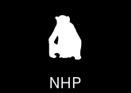
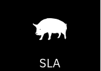

Overview
This project evaluates and ranks Major Histocompatibility Complex (MHC) compatibility between donors and recipients across multiple species, including humans, pigs, and various macaque species (Macaca mulatta and Macaca fascicularis).
 
Input Data
The input is a collection of donors and recipients each characterized by a set of MHC alleles.
These alleles are sourced from the Immuno Polymorphism Database (IPD).
Currently the project supports alleles from the following species:
Humans (HLA - Human Leukocyte Antigen)
Pigs (SLA - Swine Leukocyte Antigen)
Non-Human Primates:
Rhesus macaques (Mamu - Macaca mulatta)
Crab-eating macaques (Mafa - Macaca fascicularis)
Throughout this project, the donor and recipient alleles are kept classified in their respective classes:
Class I
Class II (DQA, DQB, DRA, DRB)
Only alleles present in the IPD-IMGT/HLA database are considered to be valid input. However, if the allele is not present in the database but it:
was used as previous nomenclature
can be extended/shortened to a valid allele. e.g. “Mamu-A11:01:01” can be shortened to “Mamu-A11:01”. It will be corrected/replaced with a valid allele (see example).
The status of the allele is also checked to see if the allele hasn’t been abandoned.
Alignment
All alleles belonging to the same class are aligned to a reference consensus sequence.
(TO DO: cite the origin of consensus sequences)
Alleles of the same class are aligned to a reference consensus sequence using MAFFT [1] with the following options:
–add: adds unaligned full length sequences to an existing alignment.
–keeplength: maintains the length of the existing alignment.
For more details, see the MAFFT documentation.
Grouping the alleles
Every donor and recipient is characterized by a list of alleles per class. To be able to compare the donor and recipient, the alleles are grouped by position.
This is done as follows:
Position |
1 |
2 |
3 |
4 |
5 |
6 |
7 |
8 |
9 |
10 |
|---|---|---|---|---|---|---|---|---|---|---|
Allele 1 |
M |
K |
L |
V |
F |
A |
Y |
D |
S |
R |
Allele 2 |
M |
R |
L |
I |
F |
A |
Y |
D |
S |
R |
Grouped allele |
M |
KR |
L |
VI |
F |
A |
Y |
D |
S |
R |
Counting initial mismatches
Before diving into counting mismatches for entire grouped donor and recipient alleles, let’s see how mismatches are counted at a single position of those grouped sequences.
Single position mismatches
Taking the donor and recipient sequences with amino acids at position i below:
Allele 1 |
Allele 2 |
Allele 3 |
Allele 4 |
|
|---|---|---|---|---|
Amino acids of donor sequences at position i |
B |
B |
A |
B |
Amino acids of recipient sequences at position i |
R |
K |
R |
A |
The donor mismatches are defined as the amino acids that are present in the donor but absent in the recipient. For the example above the donor mismatch is “B”.
The recipient mismatches are defined as the amino acids that are present in the recipient but absent in the donor. For the example above the recipient mismatches are “R” and “K”.
The figure below illustrates the concept of donor/recipient mismatches through set differences and intersections.
Full sequence mismatches
To count the donor/recipient mismatches of the entire grouped sequences, the single position mismatches are calculated for each position in the sequence.
Position |
1 |
2 |
3 |
4 |
5 |
6 |
7 |
8 |
9 |
10 |
|---|---|---|---|---|---|---|---|---|---|---|
Grouped Recipient seq. |
M |
AKR |
IE |
YV |
F |
A |
Y |
D |
S |
R |
Grouped Donor seq. |
M |
AB |
E |
VI |
F |
A |
Y |
N |
S |
R |
Donor mismatches |
B |
I |
N |
|||||||
Recipient mismatches |
KR |
I |
Y |
D |
Mismatch significance
The mismatch significance is an additional ratio that can be used to determine the importance of a mismatch. It is calculated by:
Donor mismatch significance: Number of donor sequences that have a mismatch/total number of donor alleles
Recipient mismatch significance: Number of recipient sequences that have a mismatch/total number of recipient alleles
Going back to the example shown above, let’s calculate the donor mismatch significance score at position 2:
The donor has a total of 4 alleles, with 3 alleles having the amino acid B and a single allele having the amino acid A.
This gives us a ratio of 0.75.
Solvent accessibility scores
Not all amino acid mismatches are equally relevant as some positions are buried in the 3D protein structure. To filter relevant mismatches, solvent accessibility scores are used to determine if an amino acid is buried or exposed in the protein structure.
To calculate the SAS score the SPOT-1D model was used to predict relative surface accessibility (RSA) scores [2].
An example of RSA scores for a single allele are shown below:
Position |
1 |
2 |
3 |
4 |
5 |
6 |
7 |
8 |
9 |
10 |
|---|---|---|---|---|---|---|---|---|---|---|
Allele |
M |
K |
L |
V |
F |
A |
Y |
D |
S |
R |
RSA score |
0.85 |
0.48 |
0.49 |
0.22 |
0.54 |
0.43 |
0.43 |
0.21 |
0.31 |
0.12 |
To calculate the RSA scores for an entire donor/recipient, the individual allele scores are averaged over all the donor/recipient alleles at each position.
An example of calculating the grouped RSA scores for a donor/recipient are shown below:
Position |
1 |
2 |
3 |
4 |
5 |
6 |
7 |
8 |
9 |
10 |
|---|---|---|---|---|---|---|---|---|---|---|
Seq. 1 RSA scores |
0.72 |
0.95 |
0.38 |
- |
0.29 |
0.84 |
0.47 |
0.13 |
0.56 |
0.90 |
Seq. 2 RSA scores |
0.83 |
0.27 |
0.61 |
0.15 |
0.92 |
0.46 |
- |
0.38 |
0.05 |
0.70 |
Grouped RSA score |
0.775 |
0.61 |
0.495 |
0.15 |
0.605 |
0.65 |
0.47 |
0.255 |
0.305 |
0.8 |
To filter the mismatches based on the solvent accessibility scores, a threshold can be set, scores below the threshold are filtered out.
Rankings
With the mismatches and their RSA scores calculated, donors can be ranked based on:
The number of all initial donor or recipient mismatches
The number of RSA filtered donor or recipient mismatches
Identifying known eplets
This section aims to identify known HLA eplets that are present in donor or recipient mismatches. The known eplets are taken from the HLA Eplet Registry and are filtered to only include the confirmed eplets.
To identify known eplets, the following is done (handle the case for donor, but the same can be done for recipient):
For each donor mismatch, go over the alleles that are responsible for the mismatch. Go over the eplets and identify known eplets that have the mismatch position as part of the eplet. Finally, check which eplets are present in the donor alleles responsible for the mismatch.
NOTE: The mismatches used to identify the eplets are the unfiltered/initial mismatches.
Take the following example, where there is a donor mismatch at position 44:
Position |
… |
42 |
43 |
44 |
45 |
46 |
… |
|---|---|---|---|---|---|---|---|
Donor seq. |
… |
L |
K |
R |
M |
A |
… |
Recipient seq. |
… |
L |
K |
M |
A |
A |
… |
Donor Mismatch |
… |
R |
A |
… |
Eplet 44RMA is a confirmed eplet that consists of the amino acids R, M and A at position 44, 45 and 46 respectively.
The donor at position 44 causes a mismatch, the known eplet (44RMA) is then identified at that position.
References
[1] Katoh, K., Rozewicki, J., & Yamada, K. D. (2019). MAFFT online service: Multiple sequence alignment, interactive sequence choice and visualization. Briefings in Bioinformatics, 20(4), 1160–1166. https://doi.org/10.1093/bib/bbx108
[2] Singh, J., Litfin, T., Paliwal, K., Singh, J., Hanumanthappa, A. K., & Zhou, Y. (2021). SPOT-1D-Single: Improving the single-sequence-based prediction of protein secondary structure, backbone angles, solvent accessibility and half-sphere exposures using a large training set and ensembled deep learning. Bioinformatics, 37(20), 3464–3472. https://doi.org/10.1093/bioinformatics/btab316